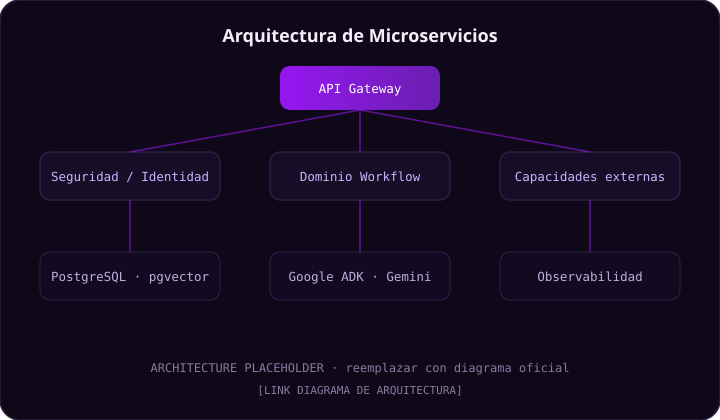
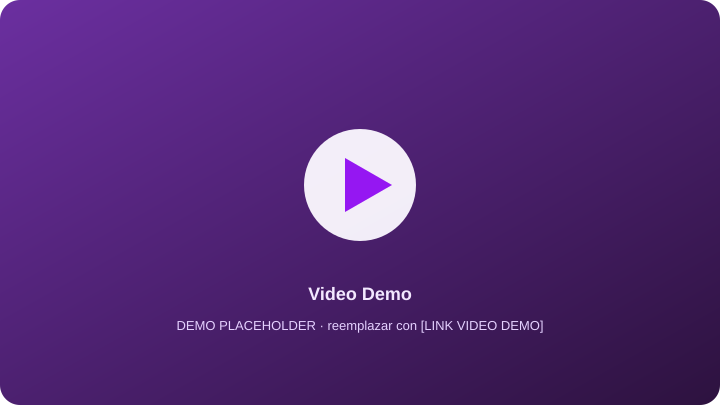

Orquestación de agentes
Coordina agentes de IA, herramientas y decisiones dentro de un mismo flujo visual.
Intelligent Agent Orchestration Platform
Diseña · Compila · Ejecuta workflows inteligentes
Plataforma de orquestación de agentes de inteligencia artificial que permite construir workflows visuales mediante nodos conectados, integrando microservicios, IA generativa, RAG, herramientas externas, ejecución segura en sandbox y trazabilidad para un contexto enterprise.
Workflow en ejecución
Synapse-Flow transforma la creación de procesos inteligentes en una experiencia visual. El usuario puede definir un flujo, conectar nodos, configurar agentes o herramientas, compilar la estructura y ejecutar el workflow con trazabilidad.
Coordina agentes de IA, herramientas y decisiones dentro de un mismo flujo visual.
Microservicios desacoplados con seguridad, configuración centralizada y observabilidad.
Google ADK + Gemini, RAG con embeddings y ejecución de código en sandbox.
Pruebas unitarias, E2E, CI/CD y despliegue contenerizado preparado para producción.
El usuario crea workflows visuales mediante nodos conectados.
El sistema valida, ordena y transforma el grafo en una versión ejecutable.
El motor ejecuta los nodos usando agentes, herramientas, RAG, código o intervención humana.
El proyecto surge como parte de un reto académico con enfoque en el diseño y construcción de una plataforma de software para una institución financiera. El contexto exige una solución escalable, segura, modular y alineada a prácticas de desarrollo enterprise.
Actualmente, la creación y operación de flujos inteligentes con agentes de IA puede requerir conocimientos técnicos, integración manual de modelos, herramientas externas y control de ejecución. Esto dificulta que equipos de negocio puedan diseñar procesos automatizados sin depender completamente de desarrollo especializado.
Synapse-Flow propone una plataforma visual donde los usuarios pueden crear workflows mediante nodos conectados. Cada nodo representa una acción o capacidad: IA, RAG, código, herramientas, decisiones, triggers o intervención humana.
Configuran nodos, integraciones, workflows y herramientas.
Supervisan, ejecutan o validan procesos.
Gestionan usuarios, roles, permisos y trazabilidad.
Revisan logs, historial y resultados de ejecución.
Diseñar y construir una plataforma de orquestación de agentes de inteligencia artificial que permita a usuarios técnicos y de negocio definir, compilar y ejecutar workflows mediante nodos visuales conectados, bajo una arquitectura de microservicios segura, trazable y escalable apropiada para un entorno enterprise como Banorte. [VALIDAR CON EQUIPO]
Los requerimientos del sistema se definieron a partir de las necesidades del socio formador, el alcance académico del reto y las funcionalidades mínimas necesarias para demostrar la creación, configuración y ejecución de workflows de agentes de IA.
| ID | Requerimiento | Estado |
|---|---|---|
| RF-01 | Autenticación de usuarios mediante credenciales y JWT | Implementado |
| RF-02 | Gestión de usuarios, roles y permisos | Implementado |
| RF-03 | Creación y administración de workflows | Implementado |
| RF-04 | Creación y configuración de nodos | Implementado |
| RF-05 | Conexión visual de nodos en un canvas | Implementado |
| RF-06 | Compilación de workflows | Implementado |
| RF-07 | Ejecución de workflows con agentes | Implementado |
| RF-08 | Integración de nodos RAG | Implementado |
| RF-09 | Ejecución de código en sandbox | Implementado |
| RF-10 | Auditoría e historial de ejecuciones | Implementado |
| ID | Categoría | Requerimiento |
|---|---|---|
| RNF-01 | Seguridad | Control de acceso mediante JWT y roles |
| RNF-02 | Escalabilidad | Arquitectura basada en microservicios |
| RNF-03 | Mantenibilidad | Separación de responsabilidades por servicio |
| RNF-04 | Observabilidad | Monitoreo con Prometheus, Grafana, Loki y Tempo |
| RNF-05 | Disponibilidad | Despliegue contenerizado y preparado para Kubernetes/OpenShift |
| RNF-06 | Confidencialidad | RAG y embeddings con enfoque on-premise |
| RNF-07 | Trazabilidad | Registro de ejecuciones y auditoría |
Como usuario, quiero iniciar sesión para acceder a la plataforma de forma segura.
Como usuario técnico, quiero crear nodos reutilizables para construir workflows.
Como usuario técnico, quiero conectar nodos visualmente para definir el flujo de ejecución.
Como usuario, quiero ejecutar workflows para obtener resultados de agentes de IA.
Como administrador, quiero gestionar usuarios y roles para controlar permisos.
Como usuario, quiero consultar historial y auditoría para revisar ejecuciones.
Como usuario técnico, quiero usar nodos RAG para consultar documentos como contexto.
Como usuario técnico, quiero ejecutar código en sandbox para agregar lógica personalizada.
Synapse-Flow está diseñado como una arquitectura de microservicios organizada en capas. El sistema separa responsabilidades entre infraestructura, seguridad, dominio del workflow y capacidades externas de ejecución. Esta separación permite escalar, mantener y extender la plataforma de forma controlada.
Servicios base que permiten configuración centralizada, descubrimiento de servicios y entrada única al sistema.
Servicios encargados de autenticación, autorización, RBAC y gestión cifrada de secretos.
Núcleo funcional de Synapse-Flow. Permite definir, compilar y ejecutar workflows.
Componentes que habilitan herramientas externas, auditoría, recuperación de contexto y ejecución aislada.

| Servicio | Responsabilidad | Estado |
|---|---|---|
| api-gateway | Punto de entrada único, ruteo y RBAC | Implementado |
| naming-server | Service discovery con Eureka | Implementado |
| spring-cloud-config-server | Configuración centralizada | Implementado |
| auth-service | Autenticación JWT | Implementado |
| admin-service | Gestión de usuarios, roles y authorities | Implementado |
| authorization-service | Autorización por recurso | Implementado |
| vault-service | Gestión cifrada de secrets | Implementado |
| workflow-service | CRUD de workflows y nodos | Implementado |
| compile-service | Compilación de workflows | Implementado |
| execution-service | Ejecución de workflows con agentes | Implementado |
| tools-execution-service | Herramientas externas y MCP | Implementado |
| audit-service | Auditoría e historial | Implementado |
Los nodos representan las capacidades ejecutables dentro de un workflow. Esta abstracción permite extender el sistema agregando nuevos tipos de nodo sin modificar toda la arquitectura.
Separación clara entre la definición del flujo y su ejecución.
Un único punto de entrada y servicios con responsabilidad única.
Guardar + rehidratar estado en lugar de mantenerlo en memoria.
Componentes intercambiables y escalables de forma independiente.
Compilar una vez y reutilizar mediante cacheo.
Aislar la ejecución y validar antes de ejecutar.
Cada componente usa la tecnología más adecuada a su propósito.
| Tecnología | Uso dentro del proyecto | Beneficio |
|---|---|---|
| Java | Backend y lógica de negocio | Enterprise, escalable y seguro. |
| Spring Boot / Cloud | Microservicios, configuración, gateway, seguridad e integración | Acelera el desarrollo y permite concentrarse en la lógica. |
| React + Vite + TS | Frontend web | Interfaz moderna y tipada. |
| React Flow | Canvas visual para workflows | Permite construir grafos de nodos. |
| PostgreSQL 17 | Base de datos principal | Persistencia confiable. |
| pgvector | Embeddings para RAG | Búsqueda semántica. |
| Google ADK | Motor de ejecución de agentes | Facilita trabajar con agentes, herramientas y modelos. |
| Gemini 2.5 Flash | Modelo generativo | Respuestas de IA. |
| Redis + Spring Cache | Cacheo de workflows compilados | Reduce consultas y trabajo repetido. |
| Docker | Contenedores y sandbox | Ambientes reproducibles y aislamiento. |
| Eureka | Descubrimiento de servicios | Comunicación dinámica entre microservicios. |
| OpenFeign | Comunicación servicio a servicio | Clientes declarativos. |
| Grafana | Visualización | Dashboards. |
| Prometheus | Métricas | Monitoreo. |
| Loki | Logs | Centralización. |
| Tempo | Trazas | Seguimiento distribuido. |
| GitHub Actions | CI/CD | Automatización de pruebas y despliegue. |
El frontend fue desarrollado con React, Vite y TypeScript. Su propósito es permitir la interacción visual con la plataforma: login, navegación, creación de nodos, construcción de workflows, ejecución y administración.
El backend fue construido con Java, Spring Boot y Spring Cloud bajo un enfoque de microservicios. Cada servicio tiene una responsabilidad específica y se comunica mediante el API Gateway, Eureka y OpenFeign.
Google ADK se usa como motor de ejecución de agentes. Permite transformar la definición visual del workflow en una lógica ejecutable, integrando agentes, herramientas, modelos y flujos. Su valor principal es facilitar el trabajo con agentes y ofrecer agnosticismo de despliegue y de modelos.
El módulo RAG recupera contexto desde documentos mediante embeddings y búsqueda semántica. Los vectores se generan con Ollama on-premise al subir el documento (trabajo pesado una sola vez) y se almacenan en PostgreSQL con pgvector. El enfoque on-premise responde a la confidencialidad y el cumplimiento regulatorio de una institución financiera: los documentos del banco no salen de la infraestructura.
Los nodos de código se ejecutan en un entorno aislado mediante contenedores Docker efímeros. Esto reduce riesgos al limitar recursos, permisos y acceso del código ejecutado.
La calidad del proyecto se abordó mediante pruebas unitarias, pruebas de integración, pruebas E2E, pruebas de usabilidad, pruebas de aceptación y pruebas de seguridad. También se documentaron resultados, retroalimentación y recomendaciones de mejora.
Pruebas de controllers, compilación y lógica de nodos.
Pruebas de login, navegación y Node Builder.
Se aplicó una prueba de usabilidad con 5 usuarios técnicos de ITC sobre 7 tareas representativas (acceso, crear nodo, construir workflow, ejecutar, human-in-the-loop, editar y revisar auditoría). Tasa de éxito: 100% en T1, T3, T4 y T5; 50% en T6 y T7 (edición y trazabilidad).
Estas pruebas se realizaron sobre una versión previa al cierre del proyecto. A partir de la retroalimentación, el equipo atendió los hallazgos detectados (ver §7.5 Mejoras aplicadas), por lo que varios de estos puntos ya fueron resueltos en la versión final.
| Métrica | Resultado |
|---|---|
| Facilidad de uso | 4.0 / 5 |
| Claridad de interfaz | 4.2 / 5 |
| Rapidez percibida | 3.8 / 5 |
| Confianza del usuario | 3.4 / 5 |
| Satisfacción general | 4.2 / 5 |
| NPS | 8 / 10 |
A partir de los hallazgos, el equipo trabajó las siguientes mejoras hacia la versión final:
Las pruebas de aceptación validan que las funcionalidades principales cumplan con los requerimientos definidos para el proyecto.
Ver plan de pruebas de aceptación ↗Las pruebas de seguridad evalúan aspectos como autenticación, autorización, control de acceso, manejo de secretos y riesgos asociados a ejecución de código o interacción con IA.
Ver pruebas de seguridad ↗El proyecto fue diseñado para ejecutarse mediante contenedores y una arquitectura preparada para ambientes enterprise. Se consideran Docker, Kubernetes/OpenShift y configuración centralizada para facilitar despliegue, escalabilidad y operación.
El proyecto integra GitHub Actions para automatizar procesos de validación, pruebas y preparación del despliegue.
| Elemento | Descripción |
|---|---|
| GitHub Actions | Pipeline de integración continua |
| Unit Testing | Ejecución de pruebas automatizadas |
| Deployment | Proceso de despliegue |
| README | Documentación técnica actualizada |
Prometheus mide, Loki centraliza logs, Tempo sigue trazas y Grafana visualiza todo en dashboards.
Recolecta métricas de los microservicios, como latencia, errores, disponibilidad y uso de recursos.
Permite visualizar métricas, logs y trazas en dashboards para monitoreo operativo.
Centraliza logs de los microservicios para facilitar diagnóstico y análisis de errores.
Permite distributed tracing para seguir una petición a través de varios microservicios.
Gestiona alertas basadas en condiciones detectadas por Prometheus.
Plataforma de despliegue enterprise para administrar contenedores, escalabilidad, configuración y operación.
Por tratarse de un proyecto bancario en un sitio público, las credenciales de acceso se entregan únicamente vía eLumen, no en este portafolio.
| Ambiente | URL | Estado |
|---|---|---|
| Desarrollo | [LINK] | [ESTADO] |
| Pruebas | [LINK] | [ESTADO] |
| Producción / Demo | [LINK] | [ESTADO] |
Plataforma visual para workflows de agentes.
Arquitectura de microservicios implementada.
Seguridad con JWT y roles.
Integración de IA con Google ADK y Gemini.
RAG con embeddings y búsqueda semántica.
Ejecución de código en sandbox.
Pruebas y evidencias de calidad.
Documentación técnica y repositorios.
Centro de enlaces del proyecto. Reemplaza cada [PLACEHOLDER] por el enlace real correspondiente.

Revisa la presentación final y los repositorios del proyecto.